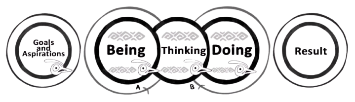

Our Expertise
Leadership Development
Leadership Development
- Leadership development journey (nine months long) for a Financial Services GCC
- Leadership Development Journey (six months) for a European Multinational
- Women Leadership Development journey (six months) for a French Multinational
- Women Leadership Development Journey (one year) for a Financial Sector GCC
- Women Leadership Development journey (3 months ) for a start up
- Leadership Development Journey for CXOs (one year) for a largest car manufacturer
- Leadership Development Journey for Consumer healthcare multinational
- Leadership Development intervention(three day workshop) for a Large Auto and Farm sector Organization
Team Development
Top Team Interventions (CEO and the leadership team)
- Building alignment and team development for a large multinational financial sector organization. This was through three workshops in a year.
- Top team development for a Multinational Pharma company as a three day workshop
- Top team development for a Multinational Pharma company as a three day workshop
- Alignment and aspiration setting workshop for an Indian Tech company with CEO and the leadership team
Culture Building
Culture Building/Driving Change, Vision, Mission
- Creating next five-year aspiration for an Indian Pharma company working with promoters and senior leadership, aligning another 300 people in their organization to this aspiration through multiple workshops and handholding the senior management through this journey
- Creating New Vision and Values for a large Life Insurance company and helping them cascade this with the next level of leadership
- Creating new values and culture for India’s leading online travel company and helping them to cascading this to the entire organization
- Creating new values and behaviors for one of the large airports and driving culture change across the organization
Capability Building
Capability Building
We have designed and conducted workshops on
- 1000 change leaders’ project: A two-day workshop for mid and senior leaders of a large Indian Bank covering 1000 people
- Driving Transformation workshop for Product leaders of a large GCC
- Executive Presence, two-day workshop and Strategic Thinking, one day workshop for a large GCC
- Conflict Resolution, Two-day workshops for a large tech company senior leaders and for leaders of a public sector Organization
- Influencing Skills, two-day workshop for a financial services firm
Vision, Mission and Values
Culture Building/Driving Change, Vision, Mission
- Creating next five-year aspiration for an Indian Pharma company working with promoters and senior leadership, aligning another 300 people in their organization to this aspiration through multiple workshops and handholding the senior management through this journey
- Creating New Vision and Values for a large Life Insurance company and helping them cascade this with the next level of leadership
- Creating new values and culture for India’s leading online travel company and helping them to cascading this to the entire organization
- Creating new values and behaviors for one of the large airports and driving culture change across the organization
One on One Coaching for CXOs
Coaching the CXOs
- Coaching the entire top leadership team of Indians largest Analytics and AI organization for six months after a two-day workshop
- Coaching the CEO of a large Indian financial sector firm
- Coaching the senior leaders of a large multinational pharma company
- Coaching the entire dealer owners of a multinational car company
Everything we do we use our unique model "Triple Loop Learning" to create "Depth & Impact"
We not only focus on the “doing” side of Leadership but also on the “thinking” and “being” part. Who we are “being” influences the goals we set and the results we get.
Triple loop Learning
01
SINGLE
LOOP
Learning new skills and capabilities
Incremental improvement
Doing something better without examining or challenging underlying beliefs and assumptions.
02
DOUBLE
LOOP
Fundamentally reshaping the underlying patterns of our thinking and behavior.
As a result we're capable of doing different things.
Going beyondsingle-loop or incremental learning.
03
TRIPPLE
LOOP
It involves "learning how to learn" by reflecting on how we learn in the first place.
This is about learning how our "begin" influence our beliefs and thus our actions.
We address both Visible and Hidden factors
When we address only the visible factors, we don't create lasting change, our expertise triple loop methodologies help us to understand the hidden factors and address them.
About the Founder
Santhosh is passionate about supporting leadership teams in creating new possibilities that add value to all stakeholders. He started ODA in 1998 and has worked with more than 300 clients in the past cross the globe. Santhosh is the author of India’s first book on coaching published by Wiley and started the first coach training program in 2006 in India. He is also an awardee of Life Time Achievement Award from Gestalt Institute, USA and selected as a Thinkers 50 in 2014. Santhosh used to write a column in Business Today called "Buddha in the Boardroom".
Santhosh coach some of the CEOs and work with several leadership teams driving transformation, culture change and leadership Development. Before starting ODA, Santhosh worked as a primary school teacher in Bhutan and as an Environmental Education Offer with World Wildlife Fund.
Trusted by Industry Leaders
Through our seminal body of work over the last two decades, we can understand the distinctiveness of the clients we have supported in terms of their challenges and aspirations and have assisted them in their growth trajectory.
Client Testimonials


What are leaders saying about ODA
JOIN THE TRANSFORMATION DISCUSSION
Let us be a part of your success story...